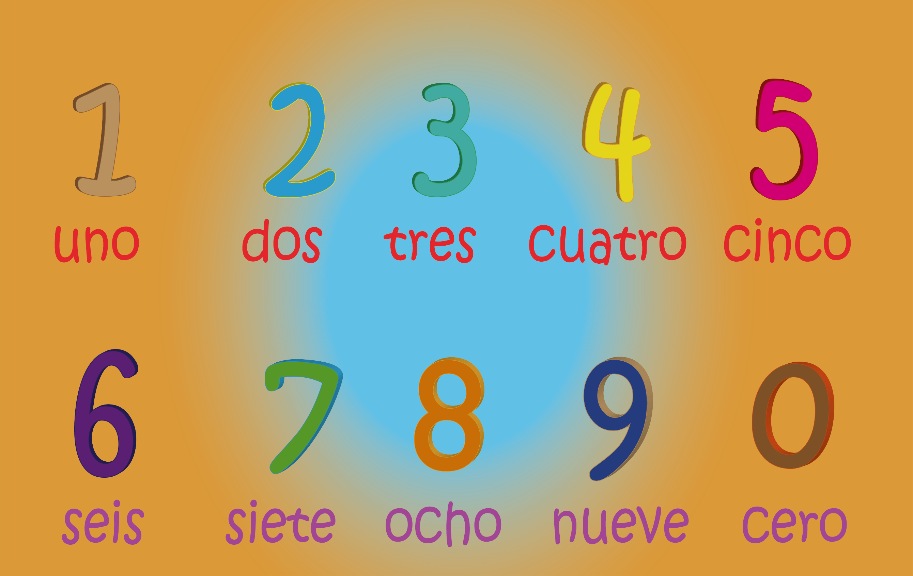

Conoce Los Números
Es utilizado para designar o denotar cantidades, valores o entidades que se comportan como cantidades, estos existen desde hace muchos años y han sido utilizados por todas las civilizaciones conocidas, en la actualidad se usan en todas las ramas, están en la contabilidad, el derecho, la medicina, astrología, astronomía, matemáticas, física, química y muchas otras carreras y ciencias.
Ahora mira como son:
El tren de los números
Te invito a ver el siguiente video para que conozcas los números de una manera divertida.